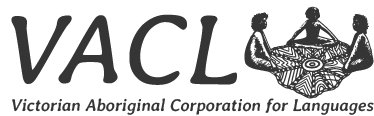

Australia is home to hundreds of different Indigenous languages that have been spoken here for thousands of years. In this map we present some words for ‘blood’ in more than 200 of these languages, with spoken examples in nearly 40 (as many as we were able to record in time for this exhibition).
Each language is associated with a particular area of land, as you can see in this map. The language associated with the land where you are now standing is called Woiwurrung.
In general, each language has more than one word for blood, but we have chosen just one for this presentation. For example, Kukatja has different words which refer to “clotted blood, congealed blood, thick blood or dried blood, and blood becoming hard, strong or like hard ground.” (see Peile 1997 for more information)
For some Aboriginal societies the discussion of blood is considered taboo and inappropriate and we have accordingly not included words for blood from those languages.
When you look at the words on this map you may find similarities among languages that are near to each other. This reflects the fact that they are closely related languages. Think of words like ‘blood’ in English, ‘bloet’ in Dutch, and ‘Blut’ in German, or ‘sangue’ in French, ‘sangue’ in Italian, and ‘sangre’ in Spanish, that reflect the historical relationship of these languages.
You may also notice that in some places, such as the Daly region southwest of Darwin, even languages that are very close together geographically have very different words for blood. This reflects the extent of linguistic diversity across Australia, which is home to more than 300 distinct languages. In Aboriginal societies linguistic diversity and multilingualism is highly valued, and so even communities that live very close to each other often maintain distinct languages that are not very closely related (think of Basque and Spanish, for example).
This display was co-ordinated by Rachel Nordlinger and Nick Thieberger of the Research Unit for Indigenous Language in the School of Languages and Linguistics, University of Melbourne.
References
Anthony Rex Peile. 1997. Body and soul : an Aboriginal view ; edited by Peter Bindon. Victoria Park, W.A. : Hesperian Press.
The map used in this display is a version of Norman Tindale’s map from 1974. It is one of a number of different maps that show the distribution of language groups across the continent. The slightly modified map shown here was produced in 2005 for the Macquarie Atlas of Indigenous Australia and is used here with permission.
References
McConvell, Patrick and Nicholas Thieberger. 2005. 'Languages past and present'. In Bill Arthur and Frances Morphy (Eds). Macquarie Atlas of Indigenous Australia, North Ryde: Macquarie Library. 78-87
Tindale, Norman B. 1974. Aboriginal tribes of Australia : their terrain, environmental controls, distribution, limits, and proper names. Berkeley : University of California Press ; Canberra : Australian National University Press, 1974.
Traditionally the languages of Australia were only spoken languages (with no writing system), although all are now written languages as well. As you may expect, each language has its own writing system, some introduced over a hundred years ago, some more recently, and each with its own local tradition. However, for the purposes of this exhibition, we have tried to make the spelling systems consistent as much as possible, and have avoided the use of special symbols. In some cases, this has meant that we have to use two English letters to represent a single sound in an Australian language, since these languages have many different sounds that are not found in English.
Here is a guide to pronouncing the letters used in this display. More details can be found by looking at work on any particular language.
|
a |
as in about, cut |
|
aa |
as in father |
|
ae |
as in fly |
|
b / p |
between English b and p |
|
d / t |
between English t and d |
|
dh / th |
like a d / t but made with your tongue blade pressed against the back of your top front teeth, and the tip of your tongue between your teeth |
|
e |
sometimes used as a long i sound, sometimes like e in hen, sometimes like e in the |
|
f |
like English f |
|
g / k |
between English k and g, occasionally written as k when at the beginning of a word |
|
gh |
like the ch in Scottish loch |
|
i |
as in pin |
|
ii / ee |
as in peel |
|
j / dj / dy /ty / tj |
sometimes like j in budge, sometimes like ch in catcher |
|
h |
glottal stop, like in cockney pronunciation of tt in bottle |
|
I |
like English l |
|
Ih |
made by saying l with your tongue blade pressed against the back of your top front teeth |
|
ly |
as in million |
|
m |
like English m |
|
n |
like English n |
|
ng / ŋ |
like ng in singer |
|
nh |
made by saying n with your tongue blade pressed against the back of your top front teeth |
|
ny |
as in onion |
|
o |
as in shot |
|
oe |
as in her |
|
r |
like r in English run, with the tongue tip turned back |
|
rd / rt |
like t said with the tongue tip curled backwards |
|
rl |
like l said with the tongue tip curled backwards |
|
rn |
like n said with the tongue tip curled backwards |
|
rr |
a trilled r like in Italian or Scottish English |
|
u |
as in put |
|
uu |
as in cool |
|
w |
like English w |
|
y |
like English y |
The names of many of the language speakers whose voices you hear on the recordings are listed here (with their language). In some cases the speaker’s name has not been included because either the speaker wished to remain anonymous, or the speaker’s name was not provided to us. We are extremely grateful to all of the language speakers who contributed recordings included in this exhibit.
Azaria Chubb Nimarra (Gurindji)Brendan Kennedy (Tati Tati)
Charlie Brian (Kune)
Dandy (Wagiman)
Desmond Pupuli (Murrinhpatha)
Frank Mundji (Kungarakany)
Fred Reece (Yuwaalaraay)
Gary Williams (Gumbaynggirr)
Jack Marilain (Kun-Barlang)
Jimmy Paddy (Miriwoong)
Joel Wright (Gunditjmara)
Joseph Díddo (Ndjébbana)
Kay Napaljarri Ross (Warlpiri)
Leonard Norman (Yanyuwa)
Lizzie Jack (Guugu Yimidhirr)
Long Jack (Marrithiyel)
Magdalene (Amurdak)
Maggie Tukumba (Dalabon)
Margaret Kemarre Turner (Arrernte)
Marianne McKinnon-Kidd (Dharug)
May Brown (Gurr-goni)
Merle Miller (Yorta Yorta)
Mirdirdingkingathi Juwarnda Sally Gabori (Kayardild)
Molly Grueman (Wambaya)
Moonlight (Warray)
Nancy Ngalmindjalmag (Mawng)
Natalie Wilson (Burarra)
Nellie Camfoo (Rembarrnga)
Nim (Djerraty)
Paddy (Ngan’gimerri)
Paul Paton (Gunnai/Kurnai)
Peter Dätjing Burrarwaŋa (Yolngu Matha)
Rita Pirak (Matngele, Malak Malak)
Sandra Lewis (Pitjantjatjara)
Many researchers, language speakers, designers, programmers and organisations have helped us in creating this exhibit and in providing the words and recordings included in it. We thank the following people and organisations for their invaluable contributions.
ARC Centre of Excellence for the Dynamics of LanguageAustralian Society for Indigenous Languages
Brett Baker
Tim Beechey
John Bradley
Margaret Carew
Travis Cox, Digital Studio, Faculty of Arts
Lizzie Crouch
Rebecca Defina
Alice Gaby
John Giacon
Jenny Green
Mitchell Harrop
Dorothea Hoffman
Ivan Kapitonov
Debbie Loakes
Robert Mailhammer
John Mansfield
Felicity Meakins
Isabel O’Keeffe
Knut J. Olawsky
Paul Paton
Maïa Ponsonnet
Marianne McKinnon-Kidd
Research Unit for Indigenous Language, University of Melbourne
Mari Rhydwen
Erich Round
Mason Scholes, David Mason and the Lúrra team at Maningrida College, NT
School of Languages and Linguistics, University of Melbourne
Ruth Singer
Hywel Stokes
Jean-Christophe Verstraete
Victorian Aboriginal Corporation for Languages
Katya Zisserman
Speaker image created by i cons from the Noun Project
